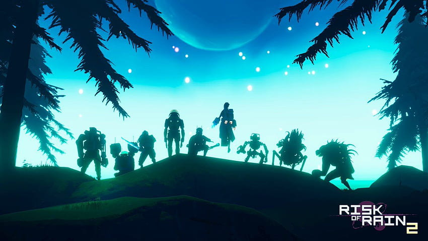
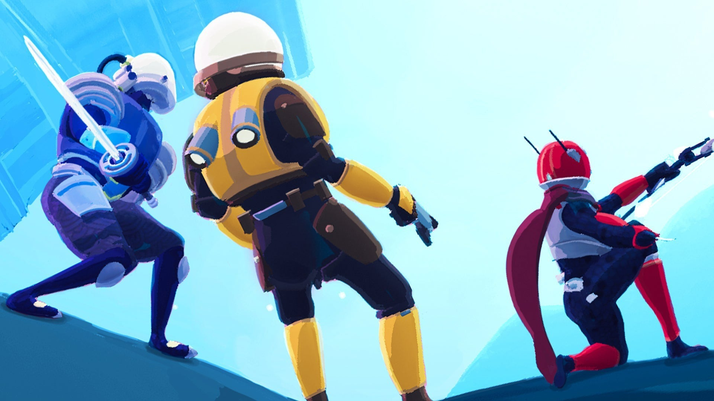
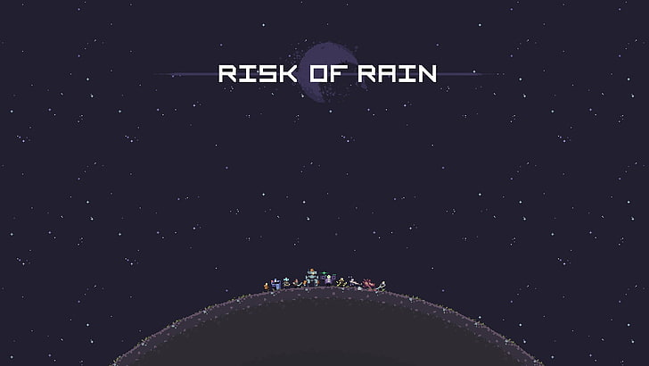

Risk of Rain 2
est un jeu vidéo de tir à la troisième personne en 3D développé par le développeur indépendant Hopoo Games et édité par Gearbox Publishing. Offert en accès anticipé sur PC depuis mars 2019, une mise-à-jour vers la version 1.0 a eu lieu le 11 août 2020. Il fait suite à Risk of Rain.
Plus


Un multijoueur exceptionnel.
Ce jeu multijoueur permet une synchronisation d'attaque assez bluffante et satisfaisante faisant de chaque partie, une expérience incroyable.

Risk Of Rain ?
Risk of Rain est un jeu vidéo d'action développé par le développeur indépendant Hopoo Games, sorti le 8 novembre 2013 sur PC.

Des Artéfacts ?
Les artéfacts peuvent être activé en début de partie permettant une modification accrue de la partie, objets non aléatoire ou encore des ennemis plus puissant.